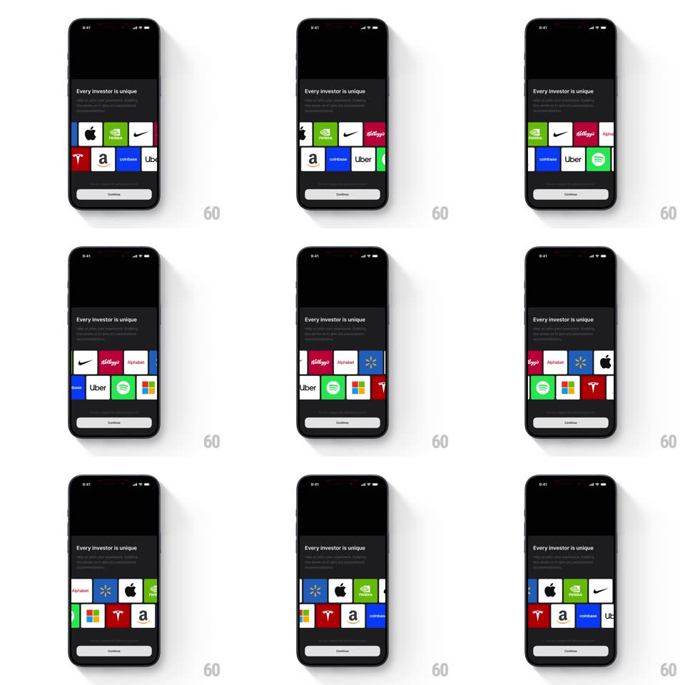

Media
Frame-by-frame

Rebuild this animation 1:1: the Quartr splash screen hands off to an onboarding bottom sheet, and inside the sheet two rows of company logo tiles scroll continuously in opposite directions as a logo ticker carousel.

Rebuild this animation 1:1: the Quartr splash screen hands off to an onboarding bottom sheet, and inside the sheet two rows of company logo tiles scroll continuously in opposite directions as a logo ticker carousel. ## Integration A bottom sheet component over a splash screen; two independent marquee rows driven by rAF or CSS keyframes, no dependencies required. ## Scene - Background: Quartr splash, near-black field with the Quartr wordmark centered. - Bottom sheet: rounded top corners (radius 24px), dark surface; heading "Every investor is unique" with one line of sub copy beneath. - Sheet body: two horizontal rows of company logo tiles (Apple, NVIDIA, Nike, Kellogg's, Alphabet, Walmart, Tesla, Amazon, Coinbase, Uber, Spotify, Microsoft). Tiles are rounded rectangles (~64px tall) with a subtle border; logos sit monochrome on dark. - Footer: full-width "Continue" primary button pinned to the bottom of the sheet. ## Motion spec Pattern: dual-direction auto-scrolling logo ticker inside a bottom sheet. - Sheet entrance: slides up from 100% viewport offset to rest over ~450ms with a decelerating ease (cubic-bezier(0.22, 1, 0.36, 1)); the splash scales to ~0.96 and dims behind the sheet. - Row 1 scrolls right-to-left continuously at ~48 px/s; Row 2 scrolls left-to-right at the same speed, offset by half a tile width. - Loop: the tile sequence is duplicated 2x per row; when the first copy exits, translate resets to 0 for a seamless wrap. - No pauses, no snapping; linear timing on both rows. - Heading and sub copy fade in 150ms after the sheet lands; the Continue button fades in 150ms after that. ## Calibration - Ticker speed: 48 px/s per row (a 320px tile run wraps every ~6.7s). - Sheet entrance: 450ms, ease-out curve. - Stagger: heading +0ms after land, sub copy +150ms, button +300ms. ## Reduced motion The sheet appears without the slide; both rows static with full tile sets visible; text and button visible immediately. ## Don't miss - The two rows move in OPPOSITE directions at the same speed. - The wrap is seamless - no gap or jump when the sequence restarts. - The splash stays visible above the sheet, slightly scaled and dimmed.